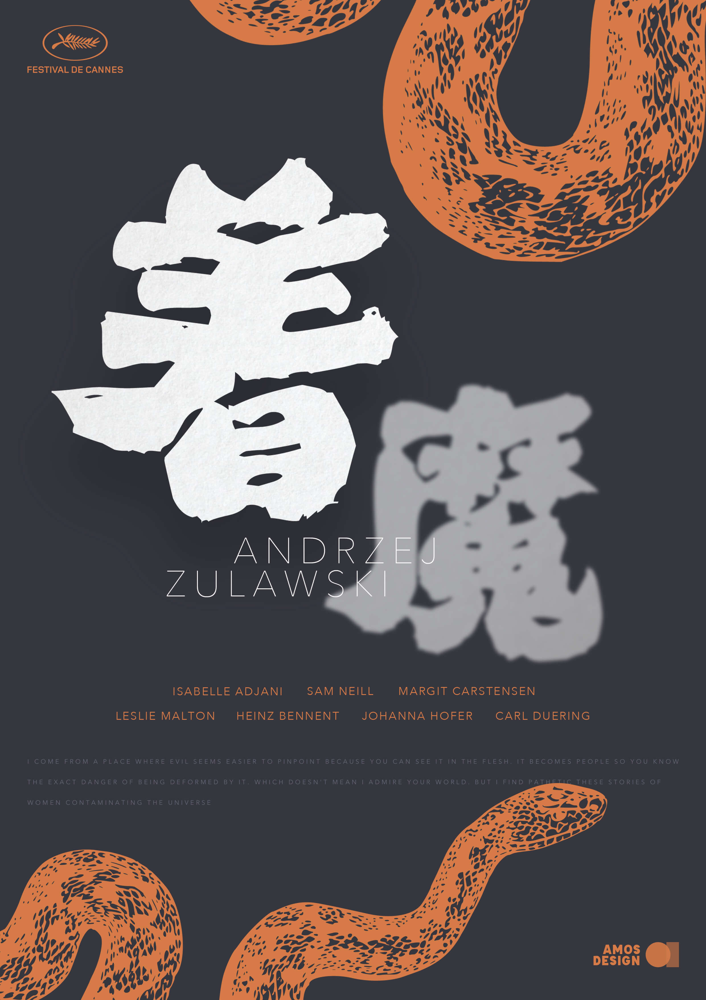
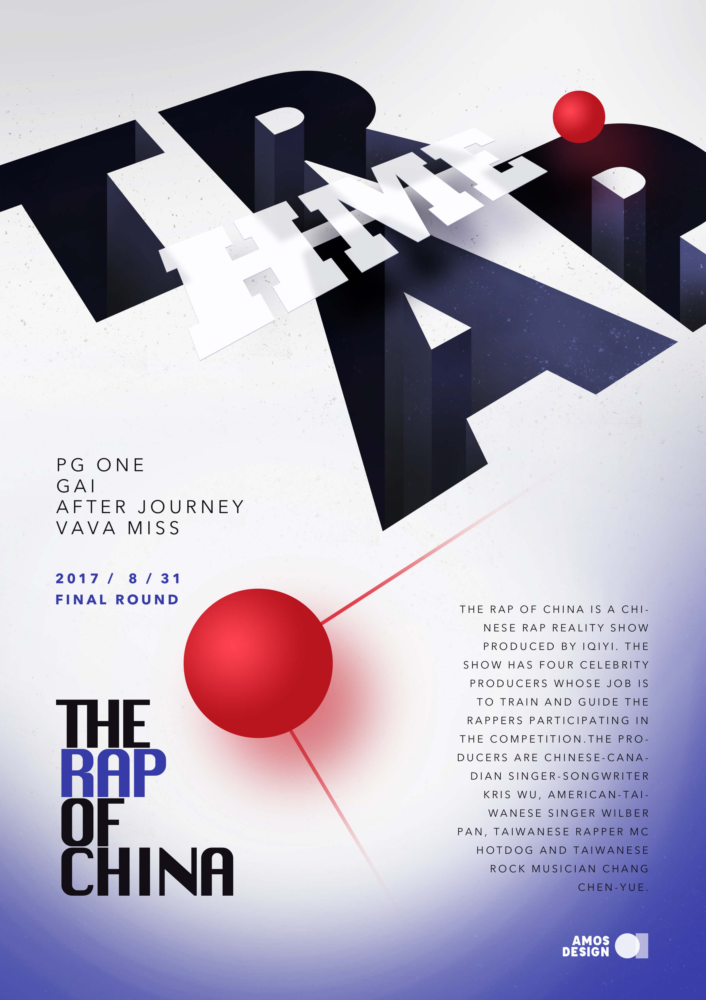
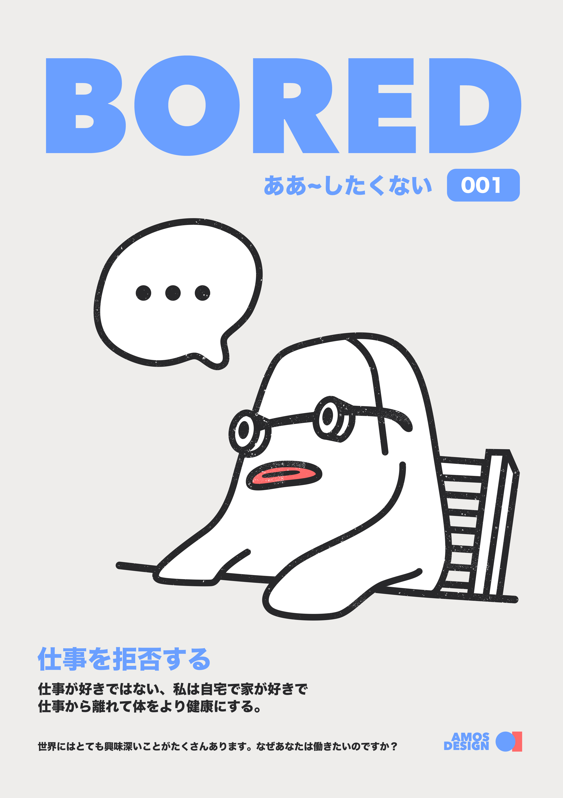

POSTER DESIGN
OVERVIEW
我认为设计是相通的，不同媒介不同材质的设计都会激发另一种设计的灵感，所以我会在空闲时尝试不同种类的设计－尤其是平面设计，它对信息的传达力、板式的自由度都可以拓宽我对UI设计的既定想法。
WORKS

这是我看完由安德烈·祖拉斯基导演、阿佳妮主演的电影“着魔”之后设计的电影海报，电影中那种诡异又隐忍的气质给了我灵感，看完就设计了出来。

当时还是中国有嘻哈的总决赛前夕，整个网络都如沸腾一般，不停的讨论着这个节目，而得知不少黑幕后，我感觉整个节目就像一个陷阱（Trap），不停的让真正的音乐、好的音乐人掉进去，同时也因为当时节目里最流行的风格也是Trap，所以就以它为主题设计了这款海报。
每个季节的尾声都会让人不自觉的感到一种悲伤的情绪，这个夏天将要过去时也不例外，“再见了，夏天先生”，再见了，这个匆匆流逝的迷幻夏天。
NASA在今年中旬时，在Twitter上发布了一个活动，给即将飞出太阳系的旅行者号带去一条消息，在征集的文字里，或者让人心潮澎湃，或者让人感动，我静静听着旅行者号携带的金唱片内容，画完了这个海报。
敦刻尔克，了不起的战争电影，当战斗机缓缓向海岸坠去时，夕阳的光斜照下来，那一刻让我想到，回去我一定要把这一幕画下来，于是就有了这个海报。
一本虚构的小说封面，以前大学时我为某出版社做了个封面设计，但该书因为某种原因却没能出版，于是书籍封面设计一直在我心中是个纠结的地方。

某个无聊透顶的时刻。
日本电影“黑猫”，时隔多年重看以后，非常喜欢这个氛围，于是将电影里的黑猫、竹林结合起来，做成了这个电影海报。
白露时节，给我们的产品设计了节气的开屏，那时候秋风已起，温度下降，整个人都透着阴郁的气息，做出来的海报也看不到半点暖色。
一个虚构的“美播之夜”，我们这个产品大概永远也办不出什么活动了，所以只能在设计里实现一下。